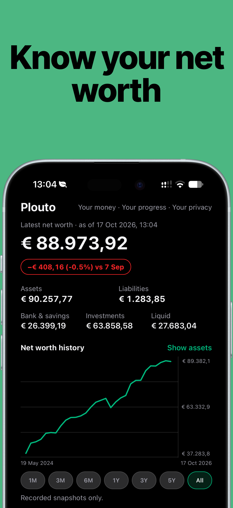
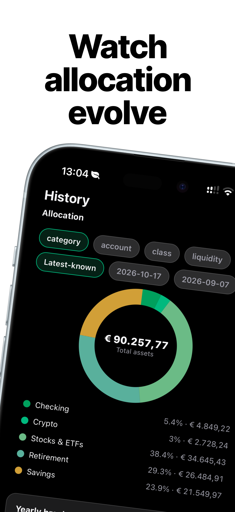
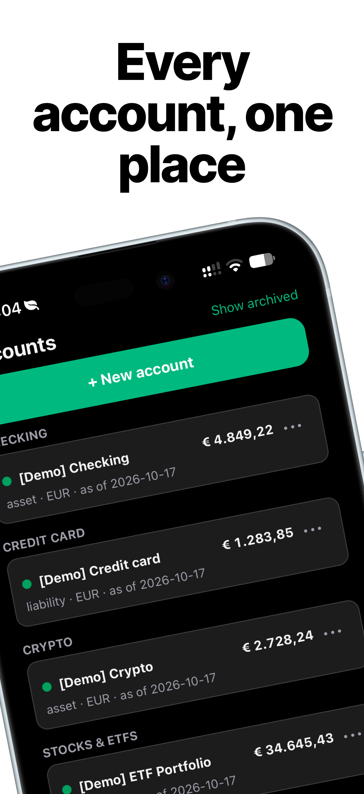
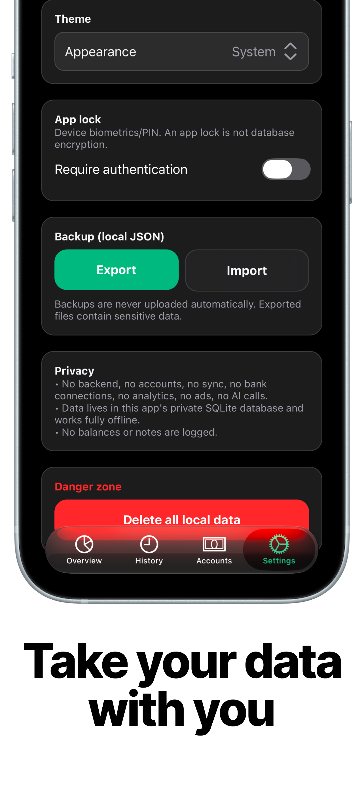

Plouto
your money, your progress, your privacy
No bank login. No account. No cloud. Your balances stay on this iPhone — and you record them whenever you check them. Plouto turns those check-ins into net worth over time.
Download for iPhoneScreenshots




Overview
Plouto is built for people who want to track wealth across banks, brokers, crypto and loans without handing their financial life to an app server. Everything is recorded by you and stays on your device.
- Tracking
- Accounts, snapshots and balances, recorded whenever you want.
- Insights
- Net worth over time, allocation donuts, comparisons and yearly breakdowns.
- Privacy
- No account, no bank connections, no cloud, no analytics, no ads.
Recording a snapshot
A check-in is one sheet, not a long form. Every active account is listed with its last recorded balance and the date it was recorded, so you can see what moved. Untick any account you didn't verify this time — it is left out, not counted as zero.
- One screen
- Accounts grouped by category, with live totals as you type. Review before saving; a title and notes are optional.
- Mixed dates
- "Latest-known" combines the newest balance per account and says so plainly. Each account detail shows the date its balance was recorded.
- Stale values
- Accounts not updated in over 45 days are flagged as stale. Accounts never observed are excluded from totals — missing is never zero.
Moving to a new iPhone
There is nothing to sign in to and no automatic cloud sync. Your history moves with one file you control.
- Export
- Settings → Export writes a JSON backup and opens the iOS share sheet. Save it to Files or iCloud Drive, or send it to yourself.
- Restore
- On the new iPhone, Settings → Import picks that file and replaces the local data with it.
The file is plain JSON, not encrypted, so keep it somewhere you trust.
Privacy Policy
Effective date: October 2026.
- Data We Collect
- None. Plouto collects no personal data, analytics, crash reports or diagnostics. The app has no network permission and cannot transmit data.
- Data You Store
- All figures you enter — account names, balances, categories, currencies, snapshots, notes and manual exchange rates — live in a local SQLite database on your device. This data never leaves your device unless you export a backup file.
- App Lock
- Optional. Plouto uses Apple's
LocalAuthenticationframework (Face ID, Touch ID or device passcode). Biometric data never leaves the Secure Enclave; Plouto only receives a success or failure result. - Backups
- You may export a JSON file at any time from Settings and choose where it goes (Files, iCloud Drive, AirDrop). The file is not encrypted, so store it somewhere you trust. Plouto never uploads it and has no server to upload it to.
- Not Financial Advice
- Plouto is a record-keeping tool. It does not connect to banks, execute trades, hold funds, or provide financial, investment or tax advice. All figures are entered by you and are for your own reference.
- Third-Party Services
- None. No analytics SDKs, crash reporters, advertising identifiers, or third-party libraries that collect data.
- Children's Privacy
- Plouto is not directed to children under 13. We do not knowingly collect personal information from children.
- Changes
- Updates to this policy will be posted here with a revised effective date. Continued use after changes constitutes acceptance.
Contact
Questions about the app or this policy? Write to bryan.vanwinnendael@skynet.be.